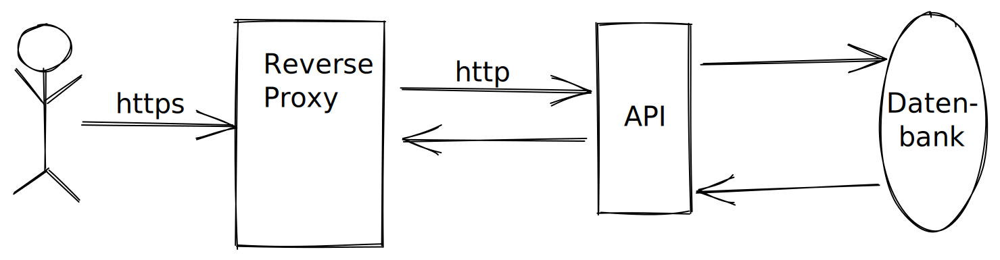

Ihre Mission
Willkommen, Agent!
Hier startet Ihre erste Trainings-Mission. Wir beginnen mit einer Aufgabe zu docker-compose.
Sie arbeiten dabei auf einer Testinstanz unseres Agenten-Verwaltung-Systems. Es speichert und verwaltet unsere Agenten sowie deren Missionen in einer Datenbank und ermöglicht den Zugriff über eine REST-API.
Damit ein sicherer Zugriff möglich ist, verwenden wir einen Reverse-Proxy zur Terminierung von SSL Verbindungen, der Aufrufe anschließend an unsere API weiterleitet.
